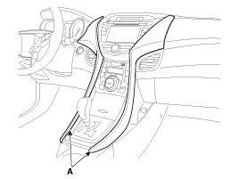
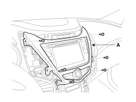
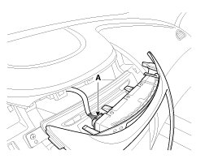
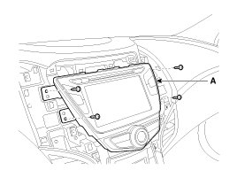
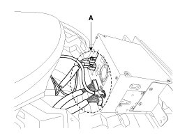
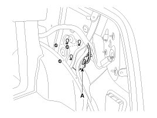
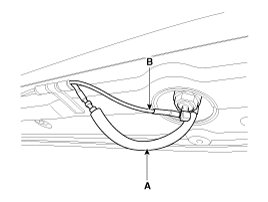
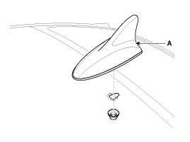

Entertainment Systems: Service and Repair
Removal
AVN Head Unit
NOTE:
- Take care not to scratch the center fascia panel and related parts.
- Eject all the disc before removing the AVN head unit to prevent damaging the CD player's load mechanism.
1. Disconnect the negative (-) battery terminal.
2. Using a screwdriver or remover, remove the crash pad garnish(A).

NOTE:
Apply the protective tapes to crash pad garnish and its related parts.
3. Remove the center fascia panel(A) with loosening screws.

4. Remove the connector(A).

5. Remove the AVN head unit assembly(A) with loosening screws.

6. Remove the AVN head unit after removing connectors and cables(A).

NOTE:
If the CD does not eject, do not attempt to remove it because the audio unit may be damaged.Contact an authorized Hyundai dealership for assistance.
External amplifier
1. Remove the trunk right luggage side trim.
2. Disconnect the external amplifier connector.
3. Remove the external amplifier(A) with loosening 3 nuts.

Roof Antenna(GPS + XM radio)
1. Remove the rear roof trim.
2. Disconnect the GPS cable(B) and XM radio cable(A) from the roof antenna.

3. Remove the roof antenna(A) after removing a nut.

Installation
AVN Head Unit
1. Connect the audio unit connectors and cables.
2. Install the AVN head unit.
3. Install the center fascia upper panel.
4. Install the crash pad garnish.
5. Connect the (-) battery cable.
NOTE:
Make sure the AVN head unit connectors are plugged in properly and the antenna cable is connected properly.
Roof Antenna (GPS + XM radio)
1. Installation the roof antenna.
2. Connect the GPS cable and XM radio cable.
3. Install the rear roof trim.
NOTE:
- Make sure that the cables and connectors are plugged in properly.
- Check the AVN system.
External Amplifier
1. Connect a connector and install the external amplifier.
2. Install the trunk right luggage side trim.